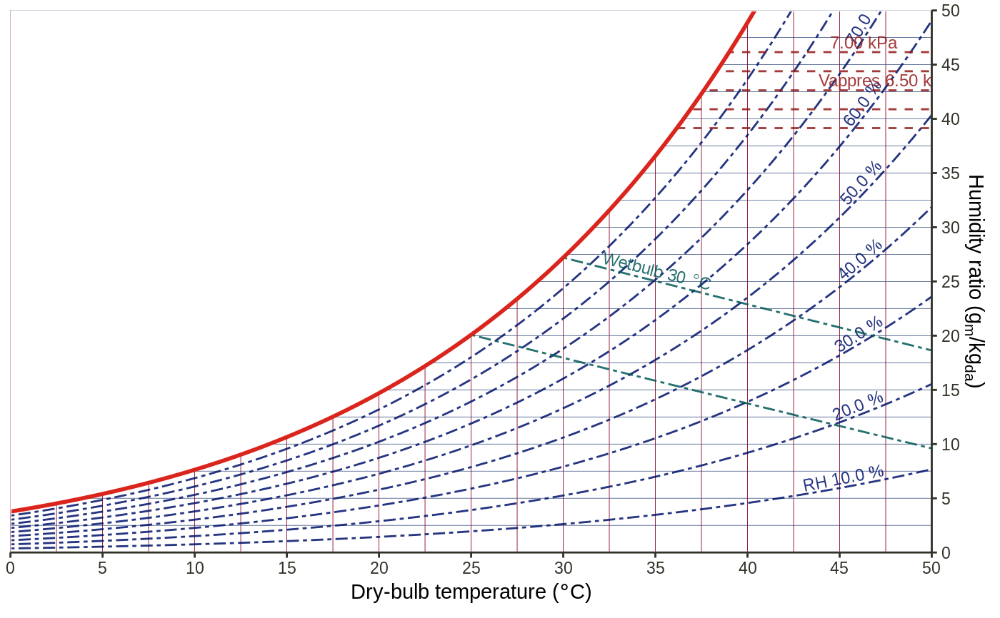

Transformation object for psychrometric chart
scale_drybulb_continuous( name = waiver(), breaks = waiver(), minor_breaks = waiver(), labels = waiver(), limits = NULL, units = waiver(), ... ) scale_humratio_continuous( name = waiver(), breaks = waiver(), minor_breaks = waiver(), labels = waiver(), limits = NULL, units = waiver(), ... ) scale_relhum( breaks = waiver(), minor_breaks = waiver(), labels = waiver(), units = waiver(), ... ) scale_wetbulb( breaks = waiver(), minor_breaks = waiver(), labels = waiver(), limits = NULL, units = waiver(), ... ) scale_vappres( breaks = waiver(), minor_breaks = waiver(), labels = waiver(), limits = NULL, units = waiver(), ... ) scale_specvol( breaks = waiver(), minor_breaks = waiver(), labels = waiver(), limits = NULL, units = waiver(), ... ) scale_enthalpy( breaks = waiver(), minor_breaks = waiver(), labels = waiver(), limits = NULL, units = waiver(), ... )
| name | The name of the scale. Used as the axis or legend title. If
|
|---|---|
| breaks | One of:
|
| minor_breaks | One of:
|
| labels | One of:
|
| limits | One of:
|
| units | A string indicating the system of units chosen. Should be:
|
| ... | Other arguments passed on to |
ggpsychro() + geom_grid_relhum() + scale_relhum(minor_breaks = NULL) + geom_grid_wetbulb() + scale_wetbulb(breaks = seq(25, 30, by = 5), minor_breaks = NULL) + geom_grid_vappres() + scale_vappres(breaks = seq(6000, 7000, by = 500), limits = c(6000, 7000)) + geom_grid_specvol() + scale_specvol(labels = NULL)